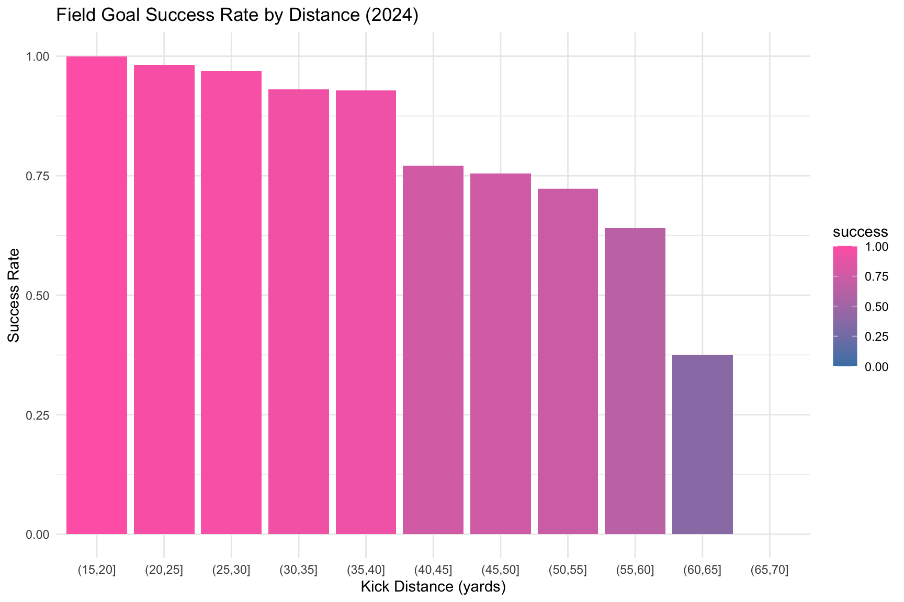
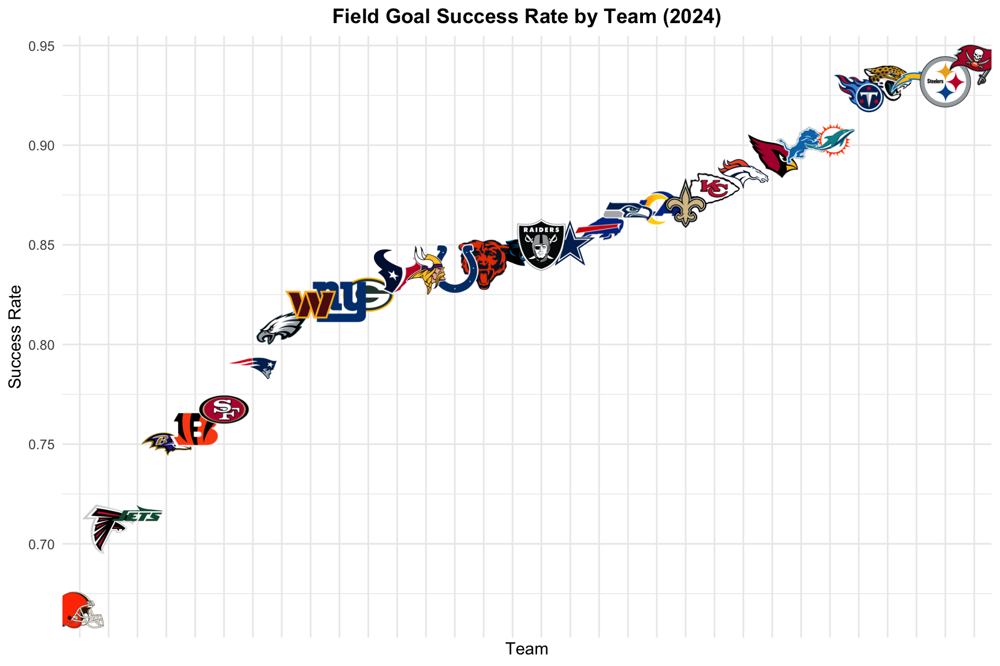
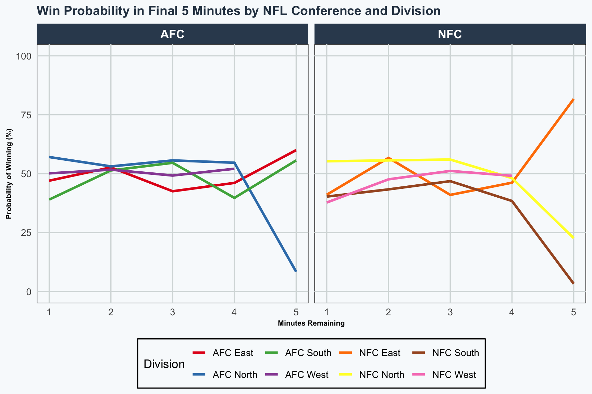
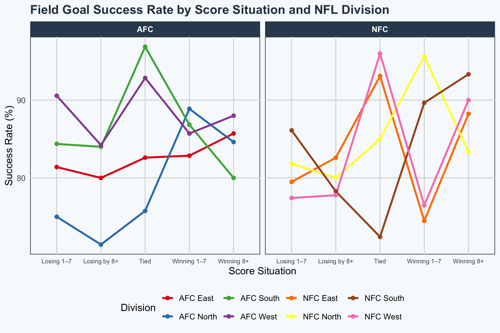

#install.packages("nflfastR")
#install.packages("nflfastR", repos = c("https://nflverse.r-universe.dev", getOption("repos")))
#pbp <- load_pbp(2023)NFL Data
DANL 310: Data Visualization and Presentation
Project Overview
- Project Webpage: https://malenecomeau.github.io/
This data storytelling project uses NFL play-by-play data from 1999–2024 to examine how game situations influence field goal success and win probability. Using descriptive statistics, data transformation, and visualizations, the project explores how factors such as kick distance, score situation, conference/division differences, and late-game pressure affect team performance. The visualizations combine NFL logos, team colors, and summarized statistics to create a clear and engaging story about decision-making and execution in professional football.
Big Idea
The main message of this project is that success in the NFL is highly dependent on context rather than averages alone. Field goal performance decreases as kick distance increases, and late-game situations dramatically shift win probability, showing how pressure and decision-making influence outcomes. This story is important because it helps coaches, analysts, and fans better understand the strategic choices teams make during critical moments of a game.
Guiding Question or Story Theme
How do game situations such as kick distance, score differential, and late-game pressure influence field goal success rates and win probability in the NFL?
Background and Context
NFL games are often decided by only a few points, making field goals and late-game decisions extremely important. A field goal is worth three points and can be attempted from different distances, with longer kicks generally being more difficult. Coaches must decide whether attempting a field goal is worth the risk based on the score, time remaining, and field position.
This project uses NFL play-by-play data collected through the nflfastR package, which contains detailed information on every play from 1999–2024, including score differential, down, distance, win probability, and special teams outcomes. The data was transformed into summarized tables to calculate field goal success percentages, compare team performance, and evaluate changes in win probability during the final five minutes of games.
Several visualizations were created to support the story. These include:
Field goal success rate by kick distance Team field goal success rates using NFL logos and colors Win probability changes in the final five minutes by AFC and NFC divisions Field goal success rates based on score situations such as leading, tied, or trailing
Together, these visualizations show that pressure, game context, and situational awareness strongly impact NFL performance and outcomes.
Data
Key Variables
field_goal_result – Identifies whether a field goal attempt was made or missed. This variable was used to calculate overall field goal success rates and compare performance across teams and situations. kick_distance – Measures the distance of a field goal attempt in yards. This variable is important because the analysis showed that success rates decrease as kick distance increases. posteam – Identifies the offensive team attempting the play or field goal. This variable was used to compare field goal success rates between NFL teams and divisions. score_differential – Represents the point difference between teams at a specific moment in the game. It was used to group plays into situations where teams were leading, tied, or trailing to examine performance under pressure. wp (win probability) – Estimates the likelihood that a team will win the game at a given point. This variable was central to the late-game analysis showing how quickly win probability changes during the final five minutes. game_seconds_remaining – Shows how much time is left in the game. This variable was used to isolate the final five minutes and analyze how teams perform during the most critical moments. division and conference variables – Team division and conference information (AFC and NFC) were added to compare trends in field goal success rates and win probability across different groups of teams.
Unit of Observation
The primary unit of observation in this project is one NFL play from the play-by-play dataset. Each row represents a single play that occurred during an NFL game, including information such as the teams involved, score differential, game clock, play type, win probability, and field goal outcome.
For some visualizations, the play-by-play data was transformed into summarized datasets. In these summarized tables, each row represents:
a kick distance category, an NFL team, a score situation (leading, tied, trailing), or an AFC/NFC division grouping.
These transformed datasets were used to calculate descriptive statistics such as average win probability and field goal success rates.
Data Source
The data for this project comes from the nflfastR play-by-play dataset.
Dataset Name: nflfastR NFL Play-by-Play Data Organization/Website: nflfastR Source Link: nflfastR Official Website Date Accessed: May 2026
The nflfastR dataset contains detailed NFL play-by-play data from seasons spanning 1999–2024. The dataset includes more than 350 variables related to game situations, including downs, distance, score differential, time remaining, expected points, win probability, play type, and special teams outcomes.
This dataset is suitable for the project because it provides detailed information needed to analyze field goal success rates and late-game win probability changes. The large time range and detailed situational variables make it possible to identify patterns in NFL decision-making, compare team performance, and create visualizations that explain how pressure and game context affect outcomes.
Data Preparation and Transformation
The data preparation process focused on transforming raw NFL play-by-play data into a summarized dataset that could clearly show changes in win probability during the final five minutes of games.
The first step was loading the 2023 NFL play-by-play dataset using the load_pbp() function from the nflfastR package. This dataset contains detailed information for every play in the NFL season, including team information, game clock, and win probability metrics.
A separate table called teams_divisions was then created to map each NFL team abbreviation to its division. This allowed the analysis to compare patterns between AFC and NFC divisions in later visualizations.
Several new variables were created to improve readability and support the analysis:
minutes_remaining converted game seconds remaining into minutes, win_probability converted win probability values into percentages, conference grouped teams into either AFC or NFC based on division names.
The dataset was filtered to include only plays occurring during the final five minutes of games because the project focused on late-game pressure and decision-making. Observations with missing division information were also removed to avoid incomplete groupings.
The team division table was joined with the play-by-play dataset using a left_join() so each play included both division and conference information.
To prepare the data for visualization, the data was grouped and summarized by:
conference, division, and minute remaining in the game.
Within each group, the mean win probability was calculated along with the total number of plays. This summarization created a cleaner dataset that highlighted overall trends instead of individual plays, making it easier to visualize how win probability changes during critical late-game moments.
library(nflfastR)
library(tidyverse)
pbp <- load_pbp(2023)
teams_divisions <- tibble::tibble(
team = c("BUF","MIA","NE","NYJ",
"BAL","CIN","CLE","PIT",
"HOU","IND","JAX","TEN",
"DEN","KC","LV","LAC",
"DAL","NYG","PHI","WAS",
"CHI","DET","GB","MIN",
"ATL","CAR","NO","TB",
"ARI","LAR","SF","SEA"),
division = c(rep("AFC East",4),
rep("AFC North",4),
rep("AFC South",4),
rep("AFC West",4),
rep("NFC East",4),
rep("NFC North",4),
rep("NFC South",4),
rep("NFC West",4))
)
win_prob_data <- pbp %>%
mutate(
minutes_remaining = game_seconds_remaining / 60,
win_probability = wp * 100
) %>%
filter(
minutes_remaining >= 1,
minutes_remaining <= 5
) %>%
left_join(teams_divisions, by = c("posteam" = "team")) %>%
filter(!is.na(division)) %>%
mutate(
conference = ifelse(grepl("AFC", division), "AFC", "NFC")
)
pbp <- load_pbp(2024)
fg <- pbp[pbp[["play_type"]] == "field_goal",]
fg <- within(fg, {
success <- ifelse(field_goal_result == "made", 1, 0)
distance_bin <- cut(kick_distance, breaks = seq(0, 70, 5), include.lowest = TRUE)
})
fg <- fg[!is.na(fg[["kick_distance"]]),]
fg_summary <- aggregate(success ~ distance_bin, data = fg, FUN = mean)
pbp <- load_pbp(2024)
fg <- pbp %>%
filter(play_type == "field_goal") %>%
mutate(
success = ifelse(field_goal_result == "made", 1, 0)
)
team_summary <- fg %>%
group_by(posteam) %>%
summarise(
success_rate = mean(success, na.rm = TRUE)
)
team_summary <- merge(team_summary, teams_colors_logos,
by.x = "posteam",
by.y = "team_abbr")The transformations were necessary to turn raw NFL play-by-play data into a format that clearly showed meaningful patterns and trends. The original dataset contains thousands of individual plays and over 350 variables, which would be difficult to interpret directly. By filtering the data to only the final five minutes of games, the analysis focused specifically on high-pressure situations where win probability changes most dramatically.
Creating new variables such as minutes_remaining and win_probability made the data easier to read and visualize. Joining the play-by-play data with division and conference information allowed comparisons between AFC and NFC teams, which supported the storytelling aspect of the project.
Grouping and summarizing the data by conference, division, and time remaining simplified the dataset and highlighted overall trends instead of isolated plays. These transformations made the visualizations clearer, easier to understand, and more effective at explaining how game context influences NFL outcomes.
Descriptive Statistics
Descriptive statistics were used throughout the project to summarize important trends in NFL performance and game situations.
Key descriptive statistics included:
average field goal success rates, average win probability during the final five minutes, total number of plays analyzed, success percentages by kick distance, team-level field goal success rates, and averages by conference and division.
The analysis showed that field goal success rates consistently decrease as kick distance increases. Shorter field goals had the highest success percentages, while longer kicks showed a noticeable drop in performance.
Descriptive statistics also revealed that late-game win probability changes rapidly in the final five minutes, especially in close games. Differences between AFC and NFC divisions highlighted how teams experience varying trends in late-game situations.
These statistics helped establish the foundation for the visual story by giving the audience a clear understanding of the overall patterns before interpreting the visualizations and conclusions.
Basic Summary
win_prob_summary <- win_prob_data %>%
mutate(
minute_bin = floor(minutes_remaining)
) %>%
group_by(conference, division, minute_bin) %>%
summarize(
probability_of_winning = mean(win_probability, na.rm = TRUE),
plays = n(),
.groups = "drop"
)Important Counts, Rates, or Group Summaries
fg_data <- pbp %>%
filter(play_type == "field_goal") %>%
mutate(
success = ifelse(field_goal_result == "made", 1, 0),
score_situation = case_when(
score_differential <= -8 ~ "Losing by 8+",
score_differential < 0 ~ "Losing 1–7",
score_differential == 0 ~ "Tied",
score_differential <= 7 ~ "Winning 1–7",
TRUE ~ "Winning 8+"
)
) %>%
left_join(teams_divisions, by = c("posteam" = "team")) %>%
filter(!is.na(division))
fg_summary2 <- fg_data %>%
group_by(division, score_situation) %>%
summarize(
success_rate = mean(success, na.rm = TRUE) * 100,
attempts = n(),
.groups = "drop"
)
fg_summary2 <- fg_summary2 %>%
mutate(
conference = ifelse(grepl("AFC", division), "AFC", "NFC")
)Initial Observations
Briefly explain what the descriptive statistics show.
Focus on patterns such as:
- largest or smallest groups,
- typical values,
- variation across groups,
- outliers or unusual cases,
- missing data issues, and
- patterns that set up your main story.
Data Visualization and Storytelling
This section is the main body of your project. Use visualizations to build a clear story.
Each visualization should include:
- a clear, message-driven title,
- readable axis labels,
- appropriate chart type,
- thoughtful color choices,
- colorblind-friendly colors,
- a source note or caption when appropriate, and
- a short written interpretation.
Your webpage should feel like one coherent narrative, not a disconnected collection of plots.
Visualization 1: Field Goal Success Rate by Kick Distance
ggplot(fg_summary, aes(x = distance_bin, y = success, fill = success)) +
geom_col() +
scale_fill_gradient(low = "steelblue", high = "hotpink") +
labs(
title = "Field Goal Success Rate by Distance (2024)",
x = "Kick Distance (yards)",
y = "Success Rate"
) +
theme_minimal()
Interpretation:
This shows the success rate by kick distance. The x-axis is kick distance in yards while the y-axis shows the success rate from 0-1 (0 being missed, 1 being made). This grapj shows one of our major findings, the shorter the kick distance, the higher the success rate.
Visualization 2: Field Goal Success Rate by Team
#install.packages("htmltools")
# packageVersion("htmltools")
# install.packages("pak")
# pak::pak("nflverse/nflplotR")
# install.packages(
# "nflplotR",
# repos = c("https://nflverse.r-universe.dev", getOption("repos"))
# )
# install.packages("nflplotR")
library(nflplotR)
ggplot(team_summary,
aes(x = reorder(posteam, success_rate), y = success_rate)) +
geom_nfl_logos(aes(team_abbr = posteam), width = 0.06
) +
labs(
title = "Field Goal Success Rate by Team (2024)",
x = "Team",
y = "Success Rate"
) +
theme_minimal() +
theme(
plot.title = element_text(hjust = 0.5, face = "bold"),
axis.text.x = element_blank()
)
Interpretation:
This visualization compares field goal success rates across all NFL teams using their logos. It allows us to see that some teams outperform others. Through further research, we know it is because those teams have higher ranking kickers and players.
Visualization 3: Win Probability in the Final 5 Minutes by NFL Conference and Division
ggplot(win_prob_summary,
aes(x = minute_bin,
y = probability_of_winning,
color = division,
group = division)) +
geom_line(size = 1.3) +
facet_wrap(~ conference) +
scale_x_continuous(
limits = c(1, 5),
breaks = 1:5
) +
scale_y_continuous(
limits = c(0, 100)
) +
scale_color_brewer(palette = "Set1") +
labs(
title = "Win Probability in Final 5 Minutes by NFL Conference and Division",
x = "Minutes Remaining",
y = "Probability of Winning (%)",
color = "Division"
) +
theme_minimal(base_size = 13) +
theme(
plot.title = element_text(
face = "bold",
size = 14,
color = "#2C3E50"
),
strip.text = element_text(
face = "bold",
size = 13,
color = "white"
),
strip.background = element_rect(
fill = "#34495E",
color = NA
),
panel.background = element_rect(fill = "#F8FAFC"),
plot.background = element_rect(fill = "#F8FAFC"),
panel.grid.major = element_line(color = "#D5DBDB"),
panel.grid.minor = element_blank(),
axis.title = element_text(
face = "bold",
size = 8
),
legend.position = "bottom",
legend.background = element_rect(fill = "#F8FAFC")
)
Interpretation:
The third visualization focuses on how win probability changes during the final five minutes of games. A line chart grouped by AFC and NFC divisions was used to display how quickly game outcomes can shift late in games.
The data was filtered specifically to late-game situations because these moments contain the highest pressure and most important coaching decisions. The visualization shows that win probability fluctuates rapidly during the closing minutes, especially in close games. Some divisions display steeper changes than others, highlighting differences in late-game performance and competitiveness.
This visualization connects directly to the earlier field goal analysis by showing why execution under pressure matters so much. A single successful or missed field goal during the final minutes can dramatically change a team’s chances of winning.
Visualization 4: Field Goal Success Rate by Score Situtation and NFL Division
ggplot(fg_summary2,
aes(x = score_situation,
y = success_rate,
color = division,
group = division)) +
geom_line(size = 1.2) +
geom_point(size = 2) +
facet_wrap(~ conference) +
scale_color_brewer(palette = "Set1") +
labs(
title = "Field Goal Success Rate by Score Situation and NFL Division",
x = "Score Situation",
y = "Success Rate (%)",
color = "Division"
) +
theme_minimal(base_size = 13) +
theme(
plot.title = element_text(
face = "bold",
size = 16,
color = "#2C3E50"
),
strip.text = element_text(
face = "bold",
color = "white"
),
strip.background = element_rect(
fill = "#34495E",
color = NA
),
panel.background = element_rect(fill = "#F8FAFC"),
plot.background = element_rect(fill = "#F8FAFC"),
panel.grid.major = element_line(color = "#D5DBDB"),
panel.grid.minor = element_blank(),
legend.position = "bottom",
axis.text.x = element_text(size = 8)
)
Interpretation:
The final visualization compares field goal success rates when teams are leading, tied, or trailing. The chart also compares these patterns across AFC and NFC divisions.
This visualization highlights how pressure influences performance. Teams attempting field goals while trailing often experience lower success rates than teams kicking while leading. The results suggest that score situation and emotional pressure may affect player execution during critical moments.
By ending with score situations and pressure-based performance, the project completes the overall narrative that NFL outcomes depend strongly on context, decision-making, and performance in high-pressure moments.
Shiny App
Briefly describe the Shiny app and dashboard that accompany this project.
Our NFL Shiny App is an interactive dashboard that allows our viewers to look through the field goal performance across NFL teams. Viewers can choose a team and adjust a kick-distance range to see how field goal success rates changed based on that distance distance. It shows a line graph with x being kick distance and y being success rate.
Dashboard
- Dashboard: Insert link here
Explain how dashboard help users interact with or explore the project data.
Connecting the Dots
The descriptive statistics, data transformations, and visualizations all work together to answer the project’s guiding question: how do game situations such as kick distance, score differential, and late-game pressure influence field goal success rates and win probability in the NFL?
The descriptive statistics established the foundation of the story by showing overall trends in field goal success rates and win probability. The data transformations then made it possible to focus specifically on meaningful game situations, such as the final five minutes or plays involving teams that were leading, tied, or trailing. By grouping and summarizing the data, the project was able to move from thousands of individual plays to clearer patterns that viewers could easily interpret.
The strongest pattern in the data was the consistent decrease in field goal success as kick distance increased. This trend appeared across teams, conferences, and divisions, suggesting that distance is one of the most important situational factors in field goal performance. Another important pattern was the rapid change in win probability during the final five minutes of games. The visualizations showed that even a single successful or missed field goal can dramatically change the expected outcome of a game.
The comparisons between AFC and NFC divisions also highlighted variation across groups. While differences existed between teams and divisions, the visualizations suggested that pressure and late-game context had a stronger influence on performance than team identity alone. One possible explanation is that high-pressure situations increase the difficulty of execution, even for highly skilled professional players.
This project matters because it demonstrates how data can help explain decision-making in sports. Coaches, analysts, players, and fans can use these patterns to better understand when teams should attempt long field goals, how late-game strategy affects outcomes, and why performance under pressure is so important in professional football.
Discussion
The findings suggest that NFL outcomes are heavily shaped by situational context rather than overall averages alone. The data show that field goal success becomes less reliable as distance increases, especially on long attempts under pressure. The patterns are also consistent with the idea that late-game situations create added pressure that can influence both player performance and coaching decisions.
The win probability analysis showed how quickly game outcomes can shift during the final minutes. This comparison demonstrates that late-game plays carry much more importance than plays earlier in the game because they can significantly affect a team’s chances of winning.
The project also revealed that although some teams perform better than others, situational factors such as score differential, time remaining, and kick distance appear to have a more consistent relationship with success rates. This trend raises questions about how teams balance risk and reward when making strategic decisions late in games.
Limitations
This project has several limitations that should be considered when interpreting the results.
The analysis is descriptive and cannot prove causation. The project identifies patterns and relationships, but it cannot determine whether one variable directly causes another. Some visualizations focus only on specific seasons or situations, such as the 2023 season or the final five minutes of games, which may not fully represent all NFL games or historical trends. Win probability models are estimates and may vary depending on the methods used to calculate them. External factors such as weather, stadium conditions, player injuries, or coaching styles were not included in the analysis. Some group comparisons may contain different sample sizes, which can affect the stability of averages and percentages.
Despite these limitations, the dataset still provides strong insight into overall NFL performance trends and situational football analysis.
Conclusion
This project used NFL play-by-play data from 1999–2024 to explore how game situations influence field goal success and win probability. Through descriptive statistics, data transformations, and visual storytelling, the analysis showed that kick distance, score situation, and late-game pressure all play major roles in determining NFL outcomes.
The main takeaway is that success in the NFL is highly context-dependent. Longer field goals are significantly more difficult, and late-game moments can quickly change a team’s chances of winning. These findings matter because they highlight the importance of strategy, execution, and decision-making under pressure. After viewing the project, the audience should remember that NFL games are often decided not just by talent, but by how teams respond to critical situations in real time.
Future Directions
Future analysis could expand the project by:
including additional variables such as weather, stadium type, or kicker experience, analyzing more detailed player-level performance, comparing trends across multiple decades or playoff games, creating an interactive dashboard or Shiny app for exploring teams and situations, examining coaching decisions such as fourth-down attempts versus field goal attempts, using predictive or statistical models to explore how different factors relate to win probability changes.
References
nflfastR NFL Play-by-Play Dataset nflfastR Official Website Accessed May 2026.
Carl S, Baldwin B (2026). nflfastR: Functions to Efficiently Access NFL Play by Play Data. R package version 5.2.0.9012. CRAN nflfastR Package Carl S (2025). nflplotR: NFL Logo Plots in ggplot2 and gt. R package version 1.6.0. CRAN nflplotR Package
National Football League (NFL) NFL Official Website Accessed May 2026.
Project Checklist
Before submitting, check that your project includes the following: